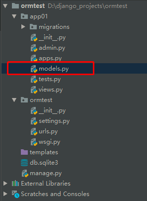

| 原生sql和python的orm代码对比 |
#sql中的表
#创建表:
CREATE TABLE employee(
id INT PRIMARY KEY auto_increment ,
name VARCHAR (20),
gender BIT default 1,
birthday DATA ,
department VARCHAR (20),
salary DECIMAL (8,2) unsigned,
);
#sql中的表纪录
#添加一条表纪录:
INSERT employee (name,gender,birthday,salary,department)
VALUES ("alex",1,"1985-12-12",8000,"保洁部");
#查询一条表纪录:
SELECT * FROM employee WHERE age=24;
#更新一条表纪录:
UPDATE employee SET birthday="1989-10-24" WHERE id=1;
#删除一条表纪录:
DELETE FROM employee WHERE name="alex"
#python的类
class Employee(models.Model):
id=models.AutoField(primary_key=True)
name=models.CharField(max_length=32)
gender=models.BooleanField()
birthday=models.DateField()
department=models.CharField(max_length=32)
salary=models.DecimalField(max_digits=8,decimal_places=2)
#python的类对象
#添加一条表纪录:
emp=Employee(name="alex",gender=True,birthday="1985-12-12",epartment="保洁部")
emp.save()
#查询一条表纪录:
Employee.objects.filter(age=24)
#更新一条表纪录:
Employee.objects.filter(id=1).update(birthday="1989-10-24")
#删除一条表纪录:
Employee.objects.filter(name="alex").delete()
| 创建名为app01的app，在app01下的models.py中创建模型： |
from django.db import models
# Create your models here.
class UserInfo(models.Model):
id = models.AutoField(primary_key=True)#如果表里面没有写主键，表里面会自动生成一个自增主键字段，叫做id字段，orm要求每个表里面必须要写一个主键
name = models.CharField(max_length=16)#和varchar(16)是一样的，16个字符
age = models.IntegerField() #int
current_date = models.DateField()#必须存这种格式"2018-12-12" 接下来要创建对应的数据，连接上对应的数据库，然后执行创建表的命令，翻译成相应的sql，然后到数据库里面执行，从而创建对应的表。多了一步orm翻译成sql的过程，效率低了，但是没有太大的损伤，还能忍受，当你不能忍的时候，你可以自己写原生sql语句，一般的场景orm都够用了，开发起来速度更快，写法更贴近应用程序开发，还有一点就是数据库升级或者变更，那么你之前用sql语句写的数据库操作，那么就需要将sql语句全部修改，但是如果你用orm，就不需要担心这个问题，不管是你从mysql变更到oracle还是从oracle更换到mysql，你如果用的是orm来搞的，你只需要修改一下orm的引擎（配置文件里面改一些配置就搞定）就可以了，你之前写的那些orm语句还是会自动翻译成对应数据库的sql语句。
简单提一下sqlite数据库：
若想将模型转为mysql数据库中的表，需要在settings中配置：
#settings.py 文件中找DATABASES这个配置,改为
DATABASES = {
'default': {
'ENGINE': 'django.db.backends.mysql',
'NAME':'bms', # 要连接的数据库，连接前需要创建好
'USER':'root', # 连接数据库的用户名
'PASSWORD':'', # 连接数据库的密码
'HOST':'127.0.0.1', # 连接主机，默认本级
'PORT'：3306 # 端口 默认3306
}，
'app01': { #可以为每个app都配置自己的数据，并且数据库还可以指定别的，也就是不一定就是mysql，也可以指定sqlite等其他的数据库
'ENGINE': 'django.db.backends.mysql',
'NAME':'bms', # 要连接的数据库，连接前需要创建好
'USER':'root', # 连接数据库的用户名
'PASSWORD':'', # 连接数据库的密码
'HOST':'127.0.0.1', # 连接主机，默认本级
'PORT'：3306 # 端口 默认3306
}
}注意1：NAME即数据库的名字，在mysql连接前该数据库必须已经创建，而上面的sqlite数据库下的db.sqlite3则是项目自动创建 USER和PASSWORD分别是数据库的用户名和密码。设置完后，再启动我们的Django项目前，我们需要激活我们的mysql。然后，启动项目，会报错：no module named MySQLdb 。这是因为django默认你导入的驱动是MySQLdb，可是MySQLdb 对于py3有很大问题，所以我们需要的驱动是PyMySQL 所以，我们只需要找到项目名文件下的__init__,在里面写入：
import pymysql
pymysql.install_as_MySQLdb()最后通过两条数据库迁移命令即可在指定的数据库中创建表 ：
python manage.py makemigrations #生成记录，每次修改了models里面的内容或者添加了新的app，新的app里面写了models里面的内容，都要执行这两条
python manage.py migrate #执行上面这个语句的记录来创建表，生成的表名字前面会自带应用的名字，例如：你的userinfo表在mysql里面叫做app01_userinfo表在执行 python manager.py magrations 时django 会在相应的 app 的migration文件夹下面生成 一个python脚本文件
在执行 python manager.py migrte 时 django才会生成数据库表，那么django是如何生成数据库表的呢，
django是根据 migration下面的脚本文件来生成数据表的
每个migration文件夹下面有多个脚本，那么django是如何知道该执行那个文件的呢，django有一张django-migrations表，表中记录了已经执行的脚本，那么表中没有的就是还没执行的脚本，则 执行migrate的时候就只执行表中没有记录的那些脚本。
有时在执行 migrate 的时候如果发现没有生成相应的表，可以看看在 django-migrations表中看看 脚本是否已经执行了，
可以删除 django-migrations 表中的记录 和 数据库中相应的 表 ， 然后重新 执行 每个字段有一些特有的参数，例如，CharField需要max_length参数来指定VARCHAR数据库字段的大小。还有一些适用于所有字段的通用参数。 这些参数在文档中有详细定义，这里我们只简单介绍一些最常用的：
更多字段：
<1> CharField 字符串字段, 用于较短的字符串.
CharField 要求必须有一个参数 maxlength, 用于从数据库层和Django校验层限制该字段所允许的最大字符数.
<2> IntegerField #用于保存一个整数.
<3> DecimalField #一个浮点数. 必须 提供两个参数:
参数 描述
max_digits 总位数(不包括小数点和符号)
decimal_places 小数位数
举例来说, 要保存最大值为 999 (小数点后保存2位),你要这样定义字段:
models.DecimalField(..., max_digits=5, decimal_places=2)
要保存最大值一百万(小数点后保存10位)的话,你要这样定义:
models.DecimalField(..., max_digits=17, decimal_places=10) #max_digits大于等于17就能存储百万以上的数了
admin 用一个文本框(<input type="text">)表示该字段保存的数据.
<4> AutoField
一个 IntegerField, 添加记录时它会自动增长. 你通常不需要直接使用这个字段;
自定义一个主键：my_id=models.AutoField(primary_key=True)
如果你不指定主键的话,系统会自动添加一个主键字段到你的 model.
<5> BooleanField
A true/false field. admin 用 checkbox 来表示此类字段.
<6> TextField #一个容量很大的文本字段.
admin 用一个 <textarea> (文本区域)表示该字段数据.(一个多行编辑框).
<7> EmailField
一个带有检查Email合法性的 CharField,不接受 maxlength 参数.
<8> DateField #一个日期字段. 共有下列额外的可选参数:
Argument 描述
auto_now 当对象被保存时(更新或者添加都行),自动将该字段的值设置为当前时间.通常用于表示 "last-modified" 时间戳.
auto_now_add 当对象首次被创建时,自动将该字段的值设置为当前时间.通常用于表示对象创建时间.
（仅仅在admin中有意义...)
<9> DateTimeField
一个日期时间字段. 类似 DateField 支持同样的附加选项.
<10> ImageField
类似 FileField, 不过要校验上传对象是否是一个合法图片.#它有两个可选参数:height_field和width_field,
如果提供这两个参数,则图片将按提供的高度和宽度规格保存.
<11> FileField
一个文件上传字段.
要求一个必须有的参数: upload_to, 一个用于保存上载文件的本地文件系统路径. 这个路径必须包含 strftime #formatting,
该格式将被上载文件的 date/time
替换(so that uploaded files don't fill up the given directory).
admin 用一个<input type="file">部件表示该字段保存的数据(一个文件上传部件) .
注意：在一个 model 中使用 FileField 或 ImageField 需要以下步骤:
（1）在你的 settings 文件中, 定义一个完整路径给 MEDIA_ROOT 以便让 Django在此处保存上传文件.
(出于性能考虑,这些文件并不保存到数据库.) 定义MEDIA_URL 作为该目录的公共 URL. 要确保该目录对
WEB服务器用户帐号是可写的.
（2） 在你的 model 中添加 FileField 或 ImageField, 并确保定义了 upload_to 选项,以告诉 Django
使用 MEDIA_ROOT 的哪个子目录保存上传文件.你的数据库中要保存的只是文件的路径(相对于 MEDIA_ROOT).
出于习惯你一定很想使用 Django 提供的 get_<#fieldname>_url 函数.举例来说,如果你的 ImageField
叫作 mug_shot, 你就可以在模板中以 {{ object.#get_mug_shot_url }} 这样的方式得到图像的绝对路径.
<12> URLField
用于保存 URL. 若 verify_exists 参数为 True (默认), 给定的 URL 会预先检查是否存在( 即URL是否被有效装入且
没有返回404响应).
admin 用一个 <input type="text"> 文本框表示该字段保存的数据(一个单行编辑框)
<13> NullBooleanField
类似 BooleanField, 不过允许 NULL 作为其中一个选项. 推荐使用这个字段而不要用 BooleanField 加 null=True 选项
admin 用一个选择框 <select> (三个可选择的值: "Unknown", "Yes" 和 "No" ) 来表示这种字段数据.
<14> SlugField
"Slug" 是一个报纸术语. slug 是某个东西的小小标记(短签), 只包含字母,数字,下划线和连字符.#它们通常用于URLs
若你使用 Django 开发版本,你可以指定 maxlength. 若 maxlength 未指定, Django 会使用默认长度: 50. #在
以前的 Django 版本,没有任何办法改变50 这个长度.
这暗示了 db_index=True.
它接受一个额外的参数: prepopulate_from, which is a list of fields from which to auto-#populate
the slug, via JavaScript,in the object's admin form: models.SlugField
(prepopulate_from=("pre_name", "name"))prepopulate_from 不接受 DateTimeFields.
<13> XMLField
一个校验值是否为合法XML的 TextField,必须提供参数: schema_path, 它是一个用来校验文本的 RelaxNG schema #的文件系统路径.
<14> FilePathField
可选项目为某个特定目录下的文件名. 支持三个特殊的参数, 其中第一个是必须提供的.
参数 描述
path 必需参数. 一个目录的绝对文件系统路径. FilePathField 据此得到可选项目.
Example: "/home/images".
match 可选参数. 一个正则表达式, 作为一个字符串, FilePathField 将使用它过滤文件名.
注意这个正则表达式只会应用到 base filename 而不是
路径全名. Example: "foo.*\.txt^", 将匹配文件 foo23.txt 却不匹配 bar.txt 或 foo23.gif.
recursive可选参数.要么 True 要么 False. 默认值是 False. 是否包括 path 下面的全部子目录.
这三个参数可以同时使用.
match 仅应用于 base filename, 而不是路径全名. 那么,这个例子:
FilePathField(path="/home/images", match="foo.*", recursive=True)
...会匹配 /home/images/foo.gif 而不匹配 /home/images/foo/bar.gif
<15> IPAddressField
一个字符串形式的 IP 地址, (i.e. "24.124.1.30").
<16> CommaSeparatedIntegerField
用于存放逗号分隔的整数值. 类似 CharField, 必须要有maxlength参数.
...更多参数：
(1)null
如果为True，Django 将用NULL 来在数据库中存储空值。 默认值是 False.
(1)blank
如果为True，该字段允许不填。默认为False。
要注意，这与 null 不同。null纯粹是数据库范畴的，而 blank 是数据验证范畴的。
如果一个字段的blank=True，表单的验证将允许该字段是空值。如果字段的blank=False，该字段就是必填的。
(2)default
字段的默认值。可以是一个值或者可调用对象。如果可调用 ，每有新对象被创建它都会被调用，如果你的字段没有设置可以为空，那么将来如果我们后添加一个字段，这个字段就要给一个default值
(3)primary_key
如果为True，那么这个字段就是模型的主键。如果你没有指定任何一个字段的primary_key=True，
Django 就会自动添加一个IntegerField字段做为主键，所以除非你想覆盖默认的主键行为，
否则没必要设置任何一个字段的primary_key=True。
(4)unique
如果该值设置为 True, 这个数据字段的值在整张表中必须是唯一的
(5)choices
由二元组组成的一个可迭代对象（例如，列表或元组），用来给字段提供选择项。 如果设置了choices ，默认的表单将是一个选择框而不是标准的文本框，<br>而且这个选择框的选项就是choices 中的选项。
(6)db_index
如果db_index=True 则代表着为此字段设置数据库索引。
DatetimeField、DateField、TimeField这个三个时间字段，都可以设置如下属性。
(7)auto_now_add
配置auto_now_add=True，创建数据记录的时候会把当前时间添加到数据库。
(8)auto_now
配置上auto_now=True，每次更新数据记录的时候会更新该字段，标识这条记录最后一次的修改时间。在python中orm的对应关系有三种：
类 ---------->表
类对象 ---------->行(记录)
类属性 ---------->表的字段（重点）创建记录方式1
student_obj = models.Student(
name='anwen',
age=23,
)
student_obj.save()
创建记录方式2
new_obj = models.Student.objects.create(name='anwen2',age=6) #写成 **{'name':'xx'}
print(new_obj) #Student object -- model对象
print(new_obj.name) #点属性,可以获取对应字段的数据
print(new_obj.age)
创建方式3 批量创建
objs_list = []
for i in range(100,3000000):
obj = models.Student(
name='xiangxixxx',
age = 10,
)
objs_list.append(obj)
models.Student.objects.bulk_create(objs_list)
创建方法4 update_or_create 有就更新,没有就创建
models.Student.objects.update_or_create(
name='妹妹2',
defaults={
'age':38,
}
)
添加日期数据
import datetime
current_date = datetime.datetime.now()
# print(current_date) #2019-07-19 12:19:26.385654
# 两种方式
# models.Brithday.objects.create(name='anwen',date=current_date)
# models.Brithday.objects.create(name='yage',date='2000-12-08')
删除 delete queryset 和model对象都可以调用
models.Student.objects.get(id=3).delete() #model对象来调用的delete方法
models.Student.objects.filter(name='anwen').delete() #
models.Student.objects.all().delete() #删除所有更新 update方法 model对象不能调用更新方法 报错信息'Student' object has no attribute 'update'
只能queryset调用,如果
models.Student.objects.get(name='anwen').update(age=38)
models.Student.objects.filter(name='anwen').update(age=38)
查询所有的数据 .all方法 返回的是queryset集合
all_objs = models.Student.objects.all()
#<QuerySet [<Student: Student object>, <Student: Student object>, <Student: Student object>]> -- 类似于列表 -- queryset集合
# for i in all_objs:
# print(i.name)
print(all_objs)
条件查询 .filter方法,返回的也是queryset集合,查询不到内容,不会 报错,返回一个<QuerySet []>空的queryset
objs = models.Student.objects.filter(id=2) #找id为2的那条记录
print(objs) #<QuerySet [<Student: anwne>]>
objs = models.Student.objects.filter(name='anwen')
print(objs) #<QuerySet [<Student: anwen>]>
条件查询 get方法,返回的是model对象,而且get方法有且必须只有1个结果
obj = models.Student.objects.get(id=3) #找id为3的那条记录
print(obj) #anwen<1> all(): 查询所有结果，结果是queryset类型
<2> filter(**kwargs): 它包含了与所给筛选条件相匹配的对象，结果也是queryset类型 Book.objects.filter(title='linux',price=100) #里面的多个条件用逗号分开，并且这几个条件必须都成立，是and的关系，or关系的我们后面再学，直接在这里写是搞不定or的
models.Student.objects.filter(id=7,name='anwen',age=78).update(
name='anwen',
age=78
)
#打伞形式传参
models.Student.objects.filter(**{'id':7,'name':'anwen'}).update(age=100)
models.Student.objects.all().filter(id=7) queryset类型可以调用fitler在过滤
<3> get(**kwargs): 返回与所给筛选条件相匹配的对象，不是queryset类型，是行记录对象，返回结果有且只有一个，如果符合筛选条件的对象超过一个或者没有都会抛出错误。捕获异常try。Book.objects.get(id=1)
<4> exclude(**kwargs): 排除的意思，它包含了与所给筛选条件不匹配的对象，没有不等于的操作昂，用这个exclude，返回值是queryset类型 Book.objects.exclude(id=6)，返回id不等于6的所有的对象，或者在queryset基础上调用，Book.objects.all().exclude(id=6)
# exclude(**kwargs): 排除,objects控制器和queryset集合都可以调用,返回结果是queryset类型
# query = models.Student.objects.exclude(id=1)
# print(query)
# query = models.Student.objects.filter(age=38).exclude(id=6)
# print(query)
<5> order_by(*field): queryset类型的数据来调用，对查询结果排序,默认是按照id来升序排列的，返回值还是queryset类型models.Book.objects.all().order_by('price','id') #直接写price，默认是按照price升序排列，按照字段降序排列，就写个负号就行了order_by('-price'),order_by('price','id')是多条件排序，按照price进行升序，price相同的数据，按照id进行升序
<6> reverse(): queryset类型的数据来调用，对查询结果反向排序，返回值还是queryset类型
# 排序之后反转
# query = models.Student.objects.all().order_by('id').reverse()
# print(query)
<7> count(): queryset类型的数据来调用，返回数据库中匹配查询(QuerySet)的对象数量。
<8> first(): queryset类型的数据来调用，返回第一条记录 Book.objects.all()[0] = Book.objects.all().first()，得到的都是model对象，不是queryset
<9> last(): queryset类型的数据来调用，返回最后一条记录,结果为model对象类型
<10> exists(): queryset类型的数据来调用，如果QuerySet包含数据，就返回True，否则返回False
空的queryset类型数据也有布尔值True和False，但是一般不用它来判断数据库里面是不是有数据，如果有大量的数据，你用它来判断，那么就需要查询出所有的数据，效率太差了，用count或者exits
例：all_books = models.Book.objects.all().exists() #翻译成的sql是SELECT (1) AS `a` FROM `app01_book` LIMIT 1，就是通过limit 1，取一条来看看是不是有数据
<11> values(*field): 用的比较多，queryset类型的数据来调用，返回一个ValueQuerySet——一个特殊的QuerySet，运行后得到的并不是一系列,model的实例化对象，而是一个可迭代的字典序列,只要是返回的queryset类型，就可以继续链式调用queryset类型的其他的查找方法，其他方法也是一样的。
<12> values_list(*field): 它与values()非常相似，它返回的是一个元组序列，values返回的是一个字典序列
<13> distinct(): values和values_list得到的queryset类型的数据来调用，从返回结果中剔除重复纪录,结果还是queryset
query = models.Student.objects.all().values('age').distinct()
print(query)
Book.objects.filter(price__in=[100,200,300]) #price值等于这三个里面的任意一个的对象
Book.objects.filter(price__gt=100) #大于，大于等于是price__gte=100，别写price>100，这种参数不支持
Book.objects.filter(price__lt=100)
Book.objects.filter(price__range=[100,200]) #sql的between and，大于等于100，小于等于200
Book.objects.filter(title__contains="python") #title值中包含python的
Book.objects.filter(title__icontains="python") #不区分大小写
Book.objects.filter(title__startswith="py") #以什么开头，istartswith 不区分大小写
Book.objects.filter(pub_date__year=2012)
# all_books = models.Book.objects.filter(pub_date__year=2012) #找2012年的所有书籍
# all_books = models.Book.objects.filter(pub_date__year__gt=2012)#找大于2012年的所有书籍
all_books = models.Book.objects.filter(pub_date__year=2019,pub_date__month=2)#找2019年月份的所有书籍，如果明明有结果，你却查不出结果，是因为mysql数据库的时区和咱们django的时区不同导致的，了解一下就行了，你需要做的就是将django中的settings配置文件里面的USE_TZ = True改为False，就可以查到结果了，以后这个值就改为False，而且就是因为咱们用的mysql数据库才会有这个问题，其他数据库没有这个问题。#关于django连接mysql的时指定严格模式的配置
DATABASES = {
'default': {
'ENGINE': 'django.db.backends.mysql',
'NAME': 'mxshop',
'HOST': '127.0.0.1',
'PORT': '3306',
'USER': 'root',
'PASSWORD': '123',
'OPTIONS': {
"init_command": "SET default_storage_engine='INNODB'",
#'init_command': "SET sql_mode='STRICT_TRANS_TABLES'",
}
}
}
DATABASES['default']['OPTIONS']['init_command'] = "SET sql_mode='STRICT_TRANS_TABLES'"'AutoField': 'integer AUTO_INCREMENT',
'BigAutoField': 'bigint AUTO_INCREMENT',
'BinaryField': 'longblob',
'BooleanField': 'bool',
'CharField': 'varchar(%(max_length)s)',
'CommaSeparatedIntegerField': 'varchar(%(max_length)s)',
'DateField': 'date',
'DateTimeField': 'datetime',
'DecimalField': 'numeric(%(max_digits)s, %(decimal_places)s)',
'DurationField': 'bigint',
'FileField': 'varchar(%(max_length)s)',
'FilePathField': 'varchar(%(max_length)s)',
'FloatField': 'double precision',
'IntegerField': 'integer',
'BigIntegerField': 'bigint',
'IPAddressField': 'char(15)',
'GenericIPAddressField': 'char(39)',
'NullBooleanField': 'bool',
'OneToOneField': 'integer',
'PositiveIntegerField': 'integer UNSIGNED',
'PositiveSmallIntegerField': 'smallint UNSIGNED',
'SlugField': 'varchar(%(max_length)s)',
'SmallIntegerField': 'smallint',
'TextField': 'longtext',
'TimeField': 'time',
'UUIDField': 'char(32)',LOGGING = {
'version': 1,
'disable_existing_loggers': False,
'handlers': {
'console':{
'level':'DEBUG',
'class':'logging.StreamHandler',
},
},
'loggers': {
'django.db.backends': {
'handlers': ['console'],
'propagate': True,
'level':'DEBUG',
},
}
} #外部文件使用django的models,需要配置django环境
import os
if __name__ == '__main__':
os.environ.setdefault("DJANGO_SETTINGS_MODULE", "singletablehw.settings")
import django
django.setup()
from app01 import models
import datetime
obj_list = []
for i in range(1,10):
obj = models.Book(
title='葵花宝典第%s式'%i,
price=20 + i,
pub_date='198%s-11-11 00:00:00'%i,
# pub_date=datetime.datetime.now(),
publish= '清华出版社' if i < 5 else '北大出版社',
)
obj_list.append(obj)
models.Book.objects.bulk_create(obj_list)